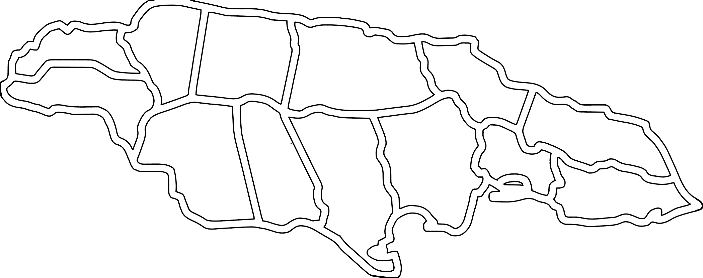
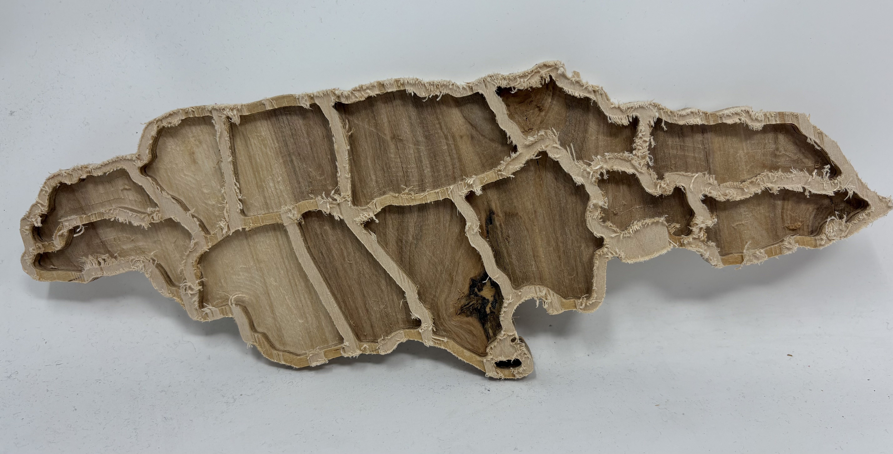
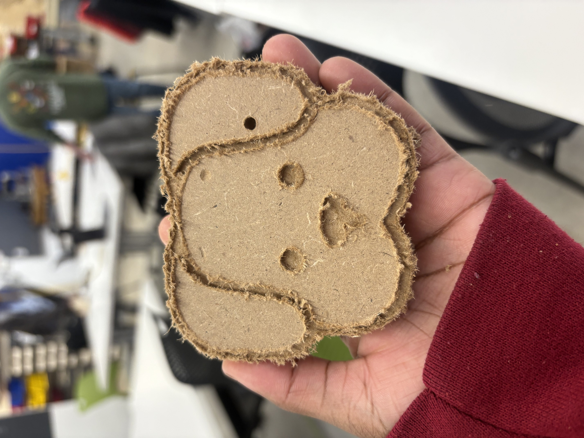
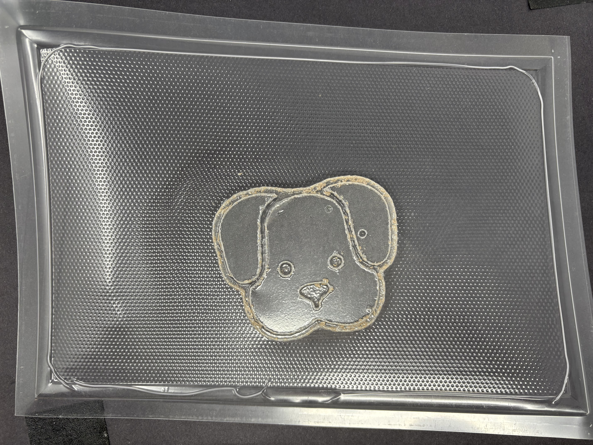
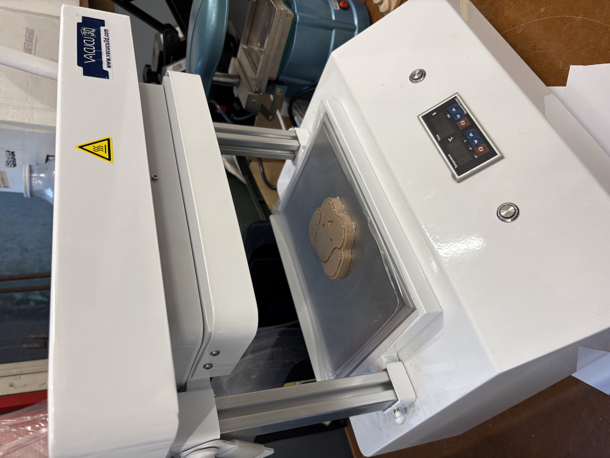
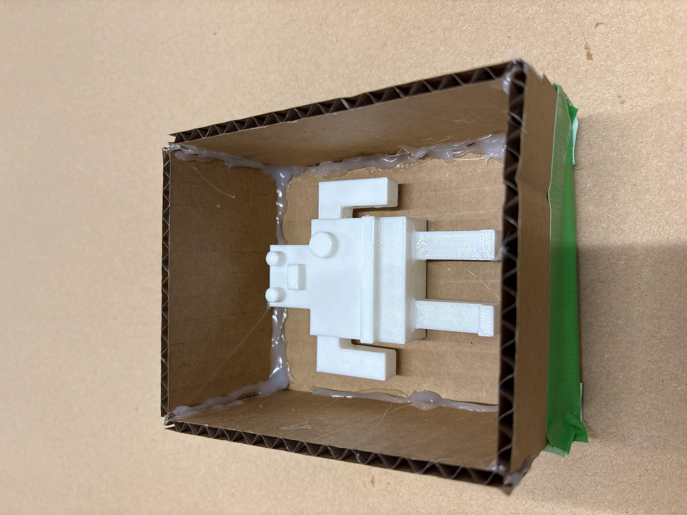
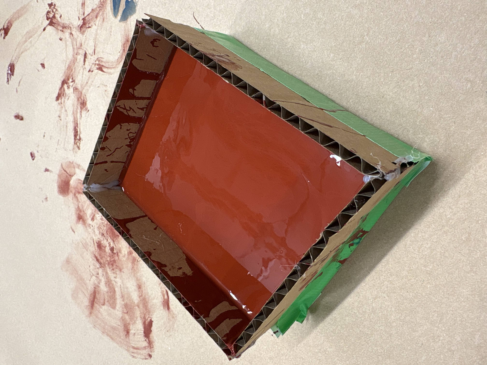

<div class="textcontainer">
<p class="margin"> </p>
<h3>Week 8: CNC Milling</h3>
<div class="flexrow">
<video width="640" height="480" controls>
<source src="cncmillingvid.mp4" type="video/mp4">
</video>
</div>
<p> For this week's assignment, I made the outline of the map of Jamaica and its parishes using CNC Milling. I found an image of the map online and converted it into an SVG file. <p> I uploaded the file into the ShopBot and used the Pocket Toolpath to carve out the parishes. </p>
<p></p>
<p> This was the finished map! </p>
<p></p>
<div class="flexrow">
<a id="btn" href="cncfiles.zip" download>CNC File!
</a>
</div>
<h3>Vacuum Forming </h3>
<p> I also did vaccuum forming on this CNC Mill of a dog's face that we made in one of our labs! </p>
<p></p>
<p></p>
<p></p>
<h3>Molding & Casting </h3>
<p> I also gained experience molding and casting. I 3D printed this robot. Then I made a mini finger joint boint box to place the 3D print in. I used the Smooth On silicon mold. There was a 100:3 weight ratio for parts A and B respectively. I mixed those two parts together then poured to the mix into the box. </p>
<p> **There will be an update on the mold in the next 24 hours! </p>
<p></p>
<p></p>
</div>